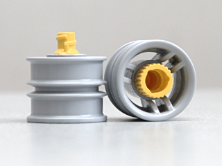
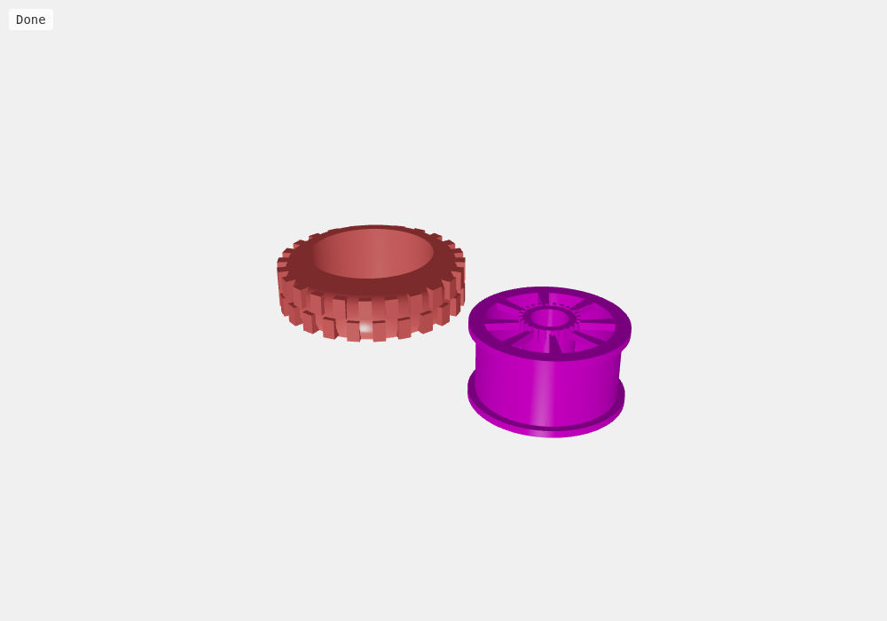
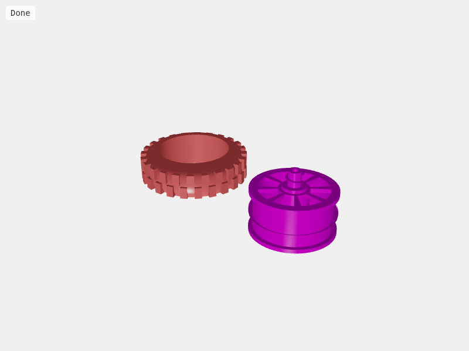
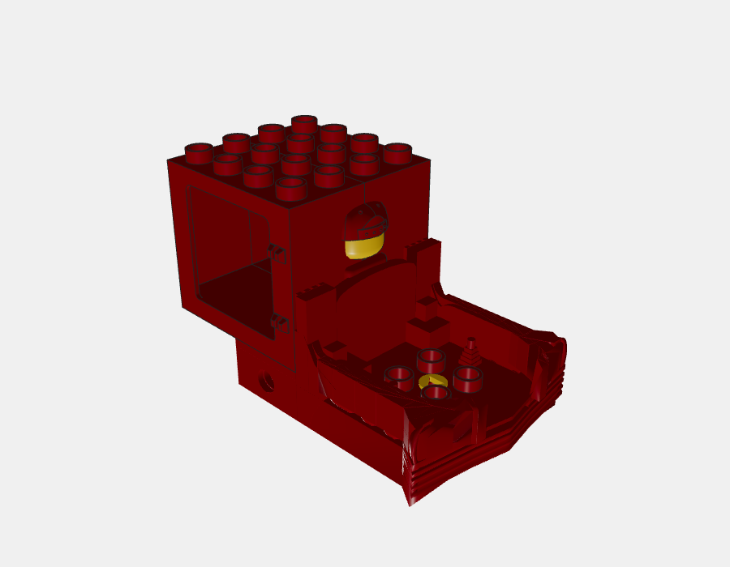
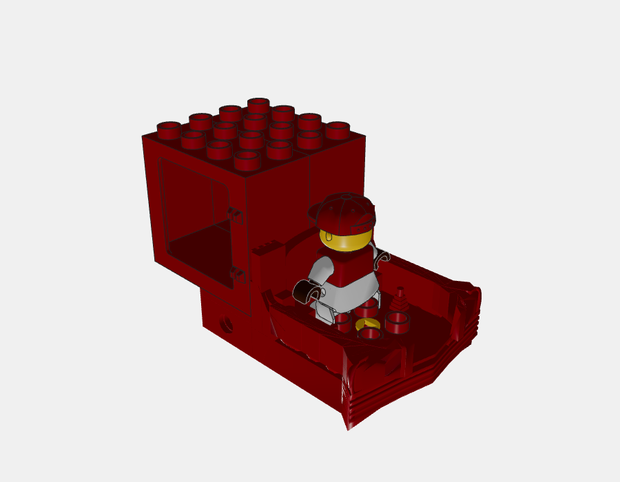
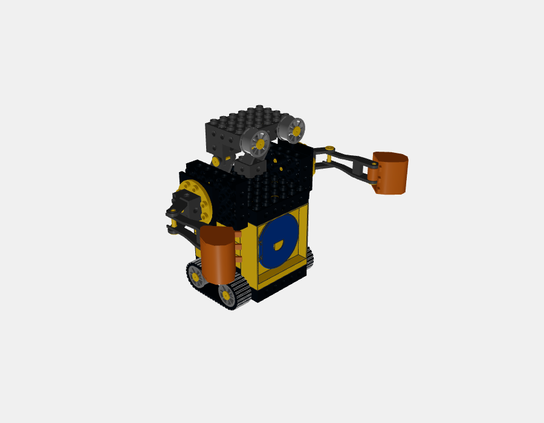
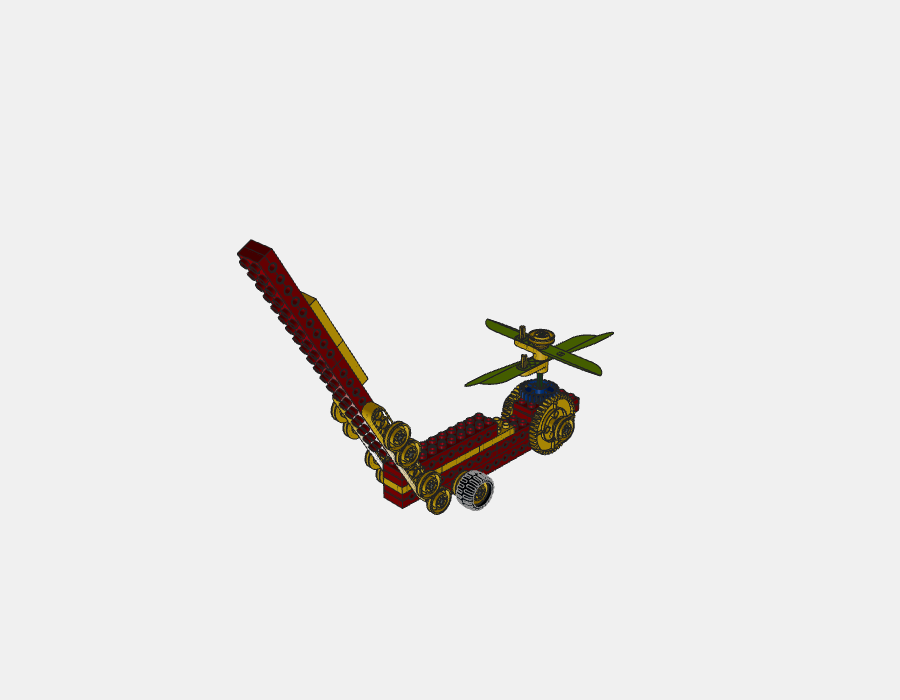

本地候选，未发布。照片核对外形，官方LDraw提供部分几何；两者都不等于实物试搭与制造公差验证。
依据实物正侧面照片曾补上阶梯凸缘，但组合检查发现它穿进现有轮胎内壁，每组新增256次三角面交叉。轮胎内槽资料不足，因此已撤回，当前保留原轮芯。下方右图只展示被否决的尝试，不是当前版本。



保持官方身体组件相对位置，整体移动。全部脚底投影有实际底板支撑，无检出人偶与外部座舱的三角面穿插。以下只为检查而隐藏罩壳和窗片，正式模型没有删掉这些零件。


瓦力、小消防车、小火车、双层巴士：门片局部X移动+4.5 LDU，使铰链条中心对准门框槽中心，未缩放门片。323次三角面交叉降到54次，剩余集中于铰链区域；这不证明插入深度与保持方式正确。门片网格来源和许可也未核实。

| 范围 | 结论与限制 |
|---|---|
| 45117c01侧翼、31239c01尾翼 | 多角度照片支持既有翼片与支架特征；仅补来源注释，尺寸仍为推定。 |
| 6294铲斗、6310三齿铲 | 保留已有轮廓、开口、齿数；夹槽和公差未实测。 |
| 4433c01 | 它是排气管，纠正此前“铲件”的分类；保留现有形状。 |
| 44970轮胎 | 没有获得足够的多角度近照，暂不改尺寸，不标为全面核实。 |
| 75536/14013c01绳钩、6295滑轮钩、45146护架 | 75536已引用官方4663钩网格；其他可见结构保留，隐藏接口与精确尺寸仍待确认。 |
两片旧自制桨改用官方61898bc01，保持实际目录几何和三孔位置。两只曲柄从下方支承，桨片正交错开；上方限位轮校正到片顶。原图确切型号未确认，此为真实零件替换方案，安装姿态与原图不同。

六个修改课程完成实际网格复查；其余294课源文件及依赖几何未变，复用匹配版本的基线。轮芯凸缘已完整撤回，不保留此次试验引入的轮胎穿插。全部300课递归依赖无缺失；实体变换无新增问题，20处既有绳索表示单列。基础检查234课无报错、66课保留225条包围盒提示。既有传动、铰链与其他相交候选继续保留，不代表300课已获实物装配认证。
未推送、未生成公开MPD、未发布。